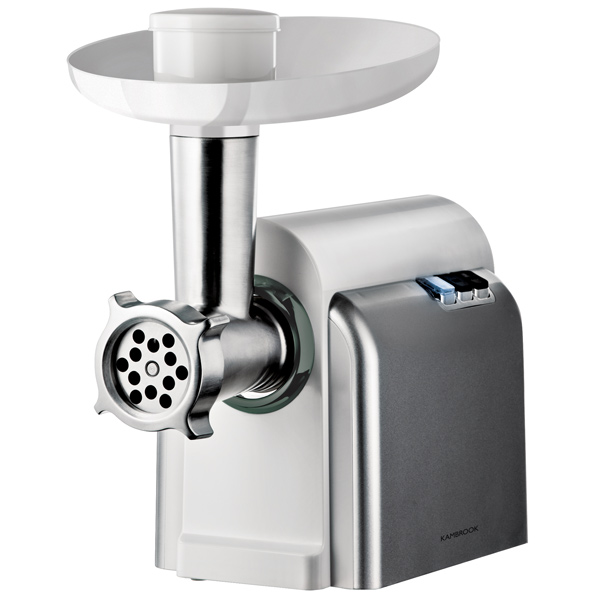
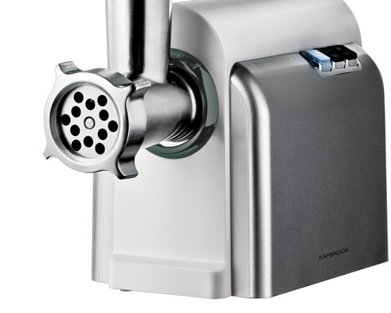
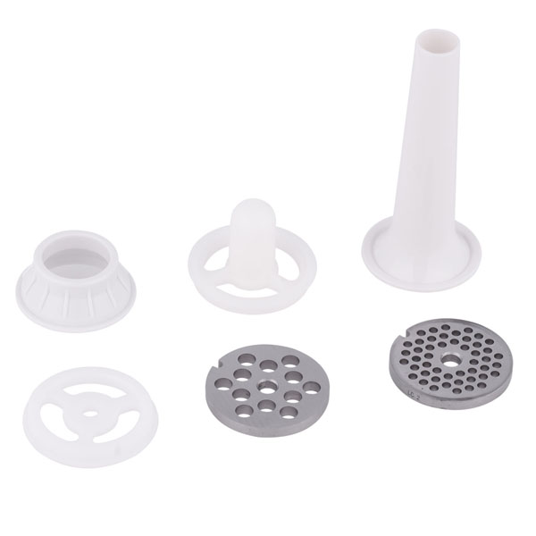
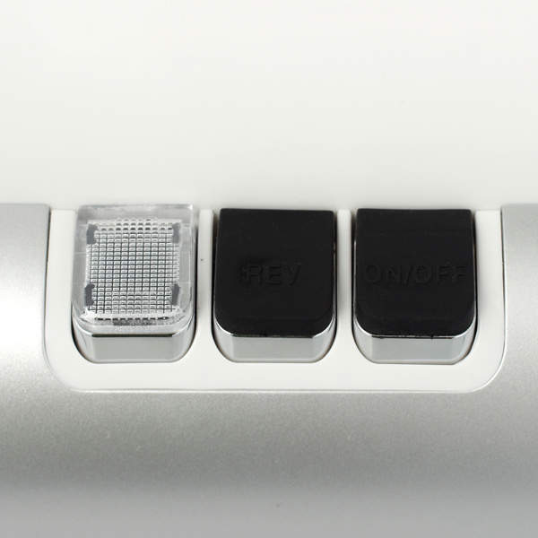
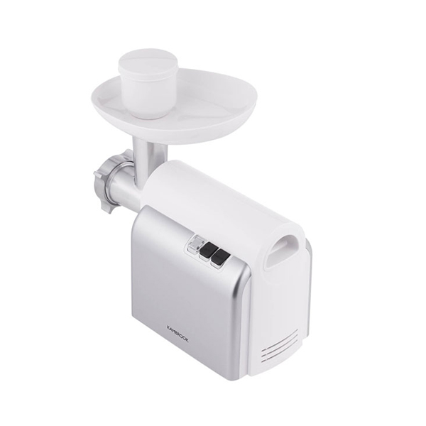
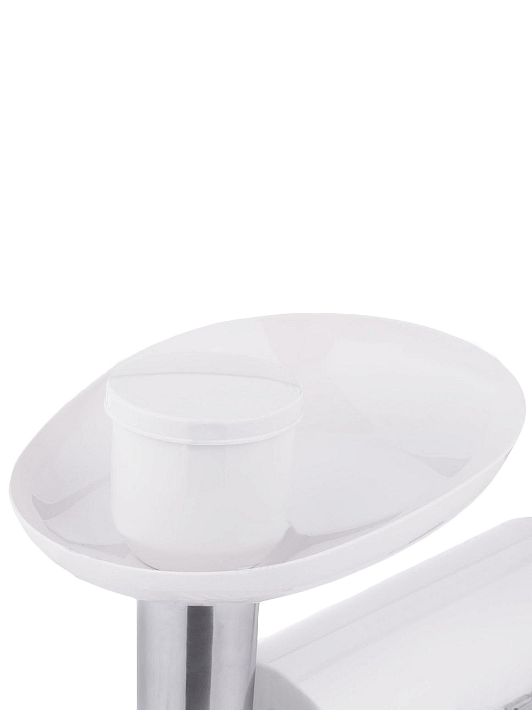
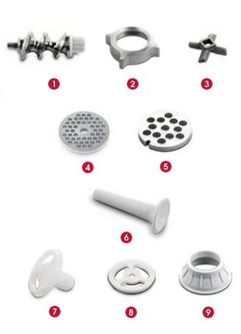
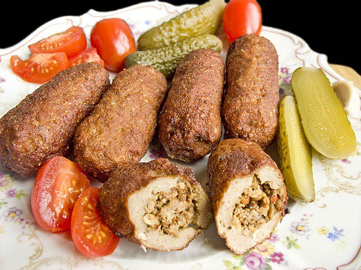
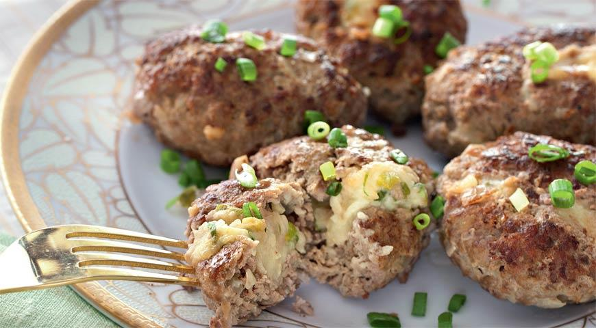
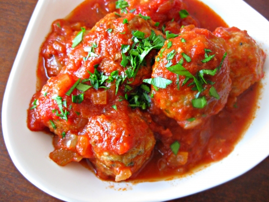

Мясорубка AMG402
Характеристики

Номинальная мощность: 350 Вт
Мощность при блок. мотора: 1500 Вт
Производительность: 1.5 кг/мин
Количество насадок: 4
Количество скоростей: 1
Реверс: Да
Насадка «кеббе»: да
Электромясорубка MG Kambrook AMG402 выполнена в стильном дизайне с белыми и серебристыми элементами конструкции. Устройство оснащено одной скоростью с реверсом и способно измельчать 1,5 кг продуктов в минуту.
Приготовление фарша
Средняя решетка – универсальный перфорированный диск, который чаще других применяется для перекручивания продукта. Его пропускная способность равна производительности данной модели. Решетка имеет около 48 отверстий с сечением 3.5-6 мм. Этот тип решетки незаменим в приготовлении фарша для различных блюд, например, для фрикаделек и котлет. Так же решетка удобна для измельчения сыра, овощей и орехов.
Крупная решетка. Она может иметь около 18 отверстий с сечением 7-9 мм. Решетка используется для быстрого приготовления грубого фарша, состоящего из крупных кусков продукта. Его пропускная способность чуть больше средних значений производительности модели мясорубки. Такую решетку применяют в кулинарии при приготовлении особых блюд либо для изготовления «промежуточного фарша», который в дальнейшем переработают, используя решетку с мелкими отверстиями. С ее помощью можно легко получить фарш для изготовления домашних колбасок. Так же решетку применяют и для перекручивания твердых сортов сыра, и для измельчения сухофруктов.
Насадки
Насадка для колбас
С ее помощью можно легко приготовить домашние колбаски: натуральная оболочка крепится на эту насадку, насадка – на шнек, и Вам остается только контролировать процесс наполнения будущей колбаски фаршем.
Насадка «кеббе»
Оригинальная насадка, с помощью которой можно получить полые трубочки. В итоге получается что-то вроде «фаршированных сосисок».
Наличие функции «реверс»
Вращение шнека в обратную сторону. Поможет справиться с застрявшей жилой – при реверсе ее просто вытолкнет в сторону входного отверстия. Если модель электрической мясорубки не имеет данной функции, то придется разбирать прибор и извлекать то, что мешает его работе, вручную.
Питание и безопасность
Номинальная мощность прибора, работающего от обычной электросети, составляет 350 Вт, его безопасность обеспечивается отключением при перегреве.
Уникальная комплектация
Электромясорубка укомплектована 4 насадками, расширяющими её функциональность: двумя решётками диаметром 3,8 и 8 мм и двумя приспособления для приготовления колбасы и кеббе. Для хранения насадок предназначен специальный отсек в корпусе.
Удобный лоток
Конструктивные особенности
Прибор весит 3,2 кг, корпус и лоток выполнены из качественного безопасного пластика, для изготовления режущих элементов использовалась сталь.
Аргументы для продажи
- Высокая производительность
- Низкое энергопотребление
- Небольшой вес прибора
- Электрическая защита от перегрузки
- Насадка для домашних колбас, набор для кеббе
Комплектация
- Шнек
- Фиксатор шнека
- Нож
- Решетка 3,8 мм
- Решетка 8 мм
- Насадка для домашних колбас
- Набор для кеббе
- Конус
- Сепаратор
- Формирователь
Рецепты
Кеббе
Основа
- 500 г молодой баранины, нарезанной полосками
- 500 г вареной и высушенной пшеничной крупы (бургула), промытой и отжатой
- 1 маленькая луковица
- Используя решетку 3,8 мм, пропустите через мясорубку попеременно отдельными порциями мясо и крупу, добавив лук перед послед- ней порцией.
- Перемешайте, а затем про- пустите еще 2 раза.
- Готовую смесь пропустите через насадку для кеббе.
Начинка
- 400 г молодой баранины, нарезанной полосками
- 1 ст.л. растительного масла
- 2 средние луковицы, мелко нарезанные
- 1–2 ч.л. молотого душистого перца
- Пучок измельченной петрушки
- 1 ст.л. пшеничной муки
- Соль, перец по вкусу
- Используя решетку 3,8 мм, пропустите через мясорубку молодую баранину.
- Поджарьте лук до золотисто-коричневого цвета. Добавьте молодую баранину.
- Добавьте остальные ингредиенты и готовьте в течение 1–2 минут.
- При необходимости удалите излишки жира, остудите. Добавьте петрушку.
- Пропустите смесь для основы через насадку для кеббе.
- Нарежьте на куски длиной 8 см.
- Закройте один край трубочки, чтобы запечатать ее. Заложите фарш (не слишком много) с другого края трубочки и запечатайте этот край.
- Обжарьте во фритюрнице с горячим (190°С) маслом в течение 6 минут или до золотисто-коричневого цвета.
Зразы из свинины с овощами
- 500 г свинины
- 1 луковица
- 1 морковь
- 100 г сыра
- 1–2 зубчика чеснока
- 2 яйца
- зелень
- панировочные сухари
- соль, перец по вкусу
- Используя решетку 3,8 мм, пропустите свинину и чеснок через мясорубку, добавьте измельченную зелень.
- Посолите, поперчите и тщательно перемешайте.
- Репчатый лук и морковь измельчите, и обжарьте на сковороде с растительным маслом, немного посолите. Остудите. Сыр натрите на крупной терке и перемешайте с овощами.
- Из фарша сформируйте лепешки. В середину выложите порцию начинки. Соедините края лепешки.
- Взбейте яйца. Обмакните поочередно все зразы во взбитую яичную смесь, обваляйте в панировочных сухарях.
- В сковороде разогрейте растительное масло. Выложите зразы на сковороду.
«Ежики» в томате
- 150 г риса
- 250 г сметаны
- 1 яйцо
- 800 г свинины и говядины
- 1 ст.л. растительного масла
- 3 ст.л. острого томатного соуса
- 2 луковицы
- соль, перец по вкусу
- Рис отварите до полуготовности, остудите.
- Лук очистите, мелко нарежьте и обжарьте в разогретом масле в течение 6 минут.
- Используя решетку 3,8 мм, пропустите через мясорубку мясо, смешайте с рисом, обжаренным луком, яйцом и половиной томатного соуса. Приправьте по вкусу солью и перцем.
- Разогрейте духовку до 180°С.
- Смажьте сметаной дно формы. Из фарша сформируйте небольшие шарики и уложите в форму плотно друг к другу.
- Оставшуюся сметану смешайте с оставшимся томатным соусом, щепоткой соли и перца, 1–2 ст.л. воды.
- Залейте «ежики», накройте фольгой и запекайте в духовке 35–40 минут.
- За 15 минут до готовности снимите фольгу